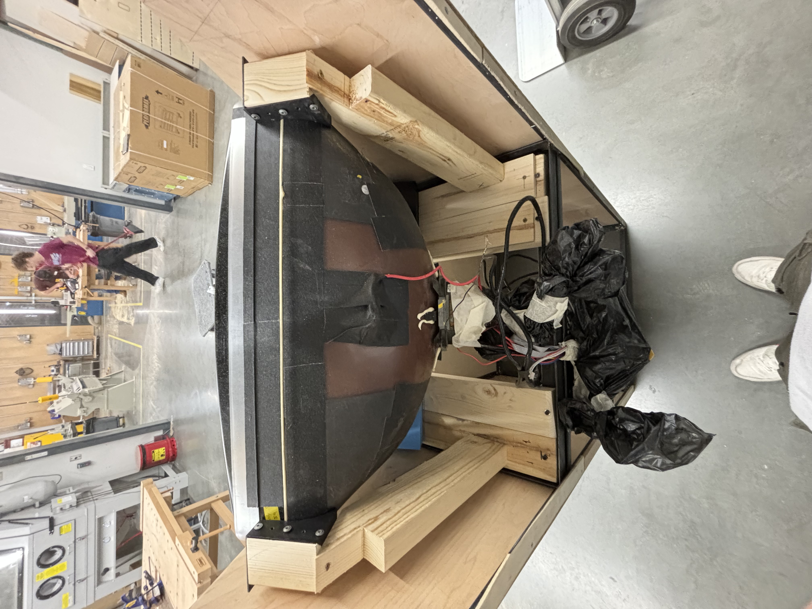

Arcade Machine
Tools: SolidWorks, 3D Scanning, 3D printing, Metalworking, Woodworking



Project Overview
While working at the Digital Modeling & Visualization Lab at Iowa State University, I was tasked with the development and fabrication of the mechanical structures for an arcade machine. The project needed to meet a hard deadline, this required creating a planner to manage the different phases of the project. This was a living document which stated the problem definition, conceptualization, initial designs, prototyping/testing, revisions, and assembly.
Key Achievements/Takeaways
- Reverse-engineered supports for a 73-pound CRT TV using 3D scanning to design and 3D print the components for a custom arcade machine
- Created a faceplate by 3D scanning the TV to generate a cross-sectional drawing, exporting it to SolidWorks as a DXF file, and laser cut wood for a seamless fit
- Utilized wood and metalworking machinery to construct a wooden frame for the arcade machine
- Integrated electrical components by 3D printing custom housings for a Raspberry Pi and adapters for HDMI-to-VGA cables, optimizing functionality and cable management